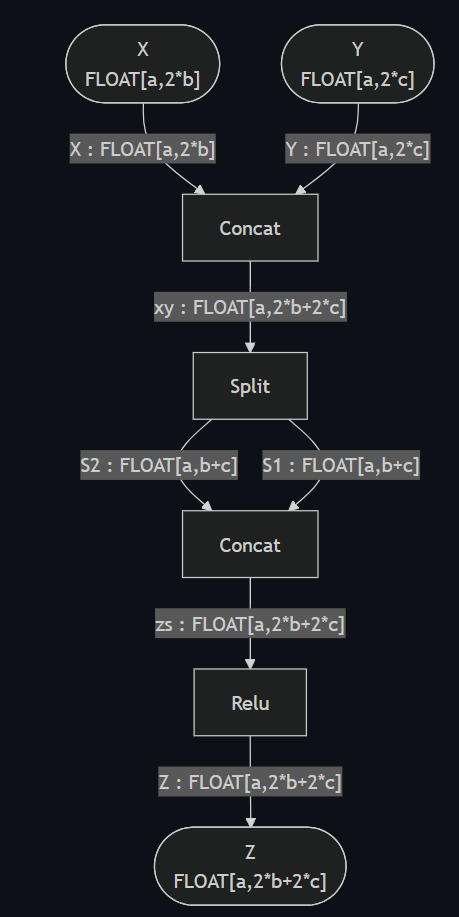
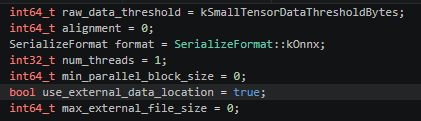
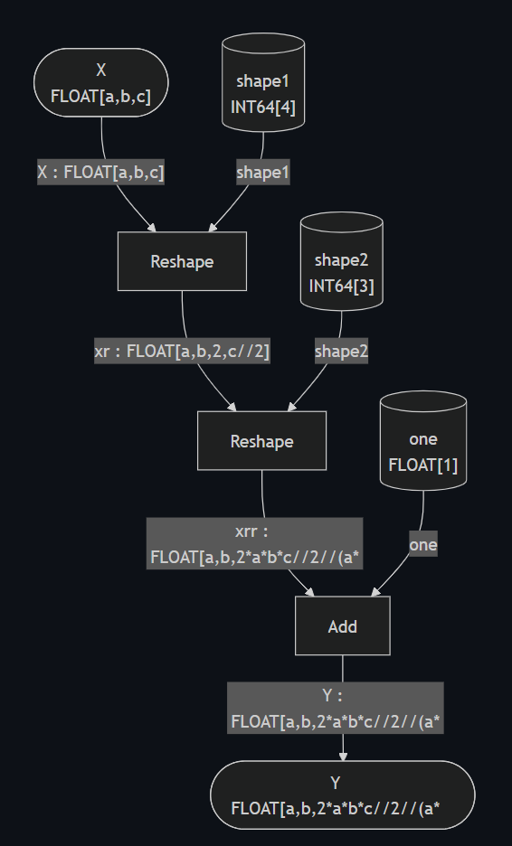
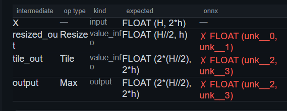
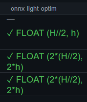
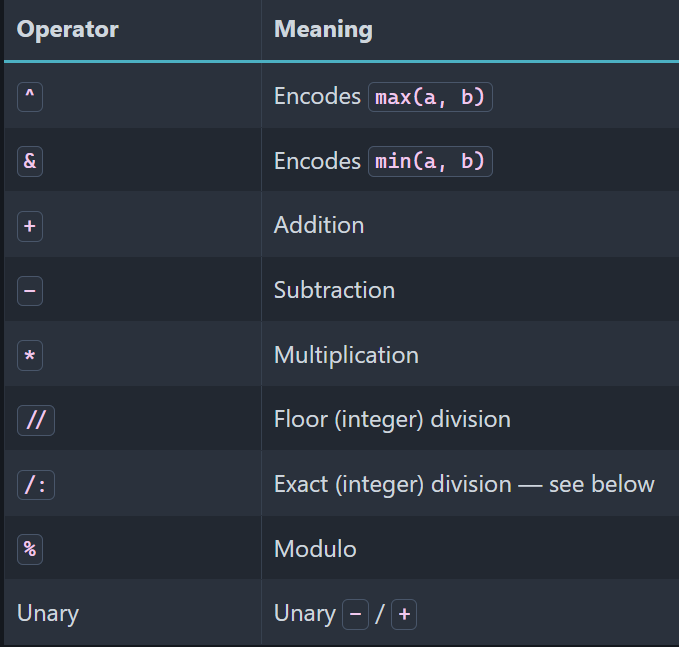

Quick tour#
onnx-light is a rewrite of onnx that keeps the same format and
the same API but drops protobuf along the way. It is protobuf
free, written in C++ only, and parallelized.
Protobuf#
Since the early days of ONNX, protobuf has been a recurring pain point:
frequent conflicts between the installed version and the one used by ONNX,
no way to switch from Python to C++ without going through serialization,
complex compilation since a header has to be generated first,
an API that cannot easily be extended,
a hard 2 GB message-size limitation.
So the question is simple: can we have protobuf without protobuf?
First question#
The prototype onnx/onnx#7208 demonstrated that a replacement keeping the same API and the same format, but without protobuf, is possible. The next question was whether to do a smooth rewriting or a complete rewriting from scratch. I chose to rewrite ONNX rather than modify the existing project: two ONNX implementations are better than one. Users can implement a switch and check both at the same time rather than going through major breaking changes in the original code base.
No protobuf, but also more#
Removing protobuf brings several benefits:
removes the 2 GB limitation,
enables parallelization,
allows custom loading strategies (read only part of a model without loading the entire file, control alignment, …),
adds native C++ support for weight files,
minimizes dependencies and security issues.
On top of that:
no serialization layer between Python and C++,
the same C++ and Python APIs,
no auto-generated Markdown files in the repository, so pull requests no longer modify 200 files at once.
Migrating existing code only requires changing the import:
import onnx_light.onnx as onnx
Other requirements#
A few other things change too:
backend tests are no longer stored as files; they are implemented as C++ functions,
backend tests are generated from a shared random test suite,
expected outputs are produced by C++ kernels,
kernels can be parallelized except for reductions, to ensure deterministic results,
flexible C++ linking: users can link only the reading / writing / serialization components, or include schemas, kernels and/or backend tests as needed.
Symbolic shape inference#
Shapes use real symbolic values instead of placeholders such as unk__0,
unk__1, …

Core pieces: take what you need#
The C++ code ships as small libraries so downstream projects link only what they need:
The approximate sizes below are the allocated ELF section sizes measured from the current Linux Release shared libraries; exact sizes vary by platform and compiler:
parse and serialize, no schema needed (
lib_onnx_proto, 1.0 MiB),existing C++ ONNX library, no change (
lib_onnx_lib, 4.4 MiB),light schema, not loaded as a static variable (
lib_onnx_op, 2.2 MiB),graph manipulations (
lib_onnx_manipulations, 0.5 MiB),new shape inference (
lib_onnx_shape, 1.7 MiB),C++ kernels (
lib_onnx_kernels, 6.1 MiB),2000+ C++ backend tests (
lib_onnx_backend_test, 11.0 MiB).
Parsing and serializing options#
data can be aligned when loading a tensor,
parallelization is possible,
onnxruntime FlatBuffers format is supported,
more secure: recursion is limited,
other scenarios can be implemented, such as a callback to allocate directly on GPU or any other memory.
See the current parsing options.

See the current serialization options.
Kernels#
Kernels are kept simple, with a dispatch mechanism to support all types. See the current implementation of a simple kernel and a type-dispatching kernel.
Backend tests#
They are very similar to the existing ones, except they do not write any file. See the current Where backend tests.
Running models#
The kernels are more than a way to produce the expected outputs of the
backend tests: together they form a self-contained C++ reference runtime
for the ONNX operator set. A model can be evaluated in C++ (or from Python)
without pulling in a third-party runtime. The runtime exposes a
RuntimeSession that parses a model once, builds an execution plan and
can then be run repeatedly on runtime Tensor inputs, which avoids rebuilding
the plan on every call. See Runtime for the design and
Benchmark Abs: onnxruntime vs onnx-light for a benchmark comparing onnx-light
with onnxruntime.
Graph optimization#
onnx-light optimizes a model by repeatedly matching small
PatternOptimization subgraphs and
replacing them with a simplified equivalent (removing useless Cast nodes,
consecutive Neg, …). Patterns are implemented in C++ and registered into a
shared dispatch table so a downstream project can add its own. Every applied
rewrite is recorded and can be replayed from the original model. See
Optimizing a model with graph-rewriting patterns for the optimization workflow,
Replaying graph-rewriting patterns for replay, and
How to add a custom graph-rewriting pattern and set its priority for writing a custom pattern.
Gradients#
Gradients of an ONNX graph can be computed and used to train a model. See Gradient and training loop for linear regression for a linear-regression example.
Encrypted save / load#
Models can be encrypted with AES-256-CBC (ONNXCRY1) or ChaCha20-Poly1305
(ONNXCRY2), both using PBKDF2-HMAC-SHA256 key derivation, and saved to a
single self-contained .onnxc file or serialized to an in-memory bytes
object.
Shape inference tests#
New tests are dedicated to shape inference: value_info is filled with the
expected values.



Symbolic expressions#
Expressions only use symbols, with no function calls, to keep them short. There are two divisions:
//rounds the result,/:is used when the exact result is known to be an integer.
For example, Reshape(x[N], [-1, 2]) tells us N is even, so we write
N /: 2 and not N // 2: 2 * (N /: 2) == N while 2 * (N // 2)
may differ.

See the current symbolic-expression tests.
Next steps#
Several of the original goals are now implemented: a C++ reference runtime,
graph-rewriting optimizations, gradient computation, encrypted save / load and
the onnxruntime FlatBuffers format. Compatibility with ir-py
and with the standard onnx API is checked continuously in CI. Work still in
progress and under discussion is tracked in Next Steps, and includes:
extending the runtime with session execution pools and prepared execution,
quantization and custom tensor types,
more graph transformations and model-resolution scenarios.